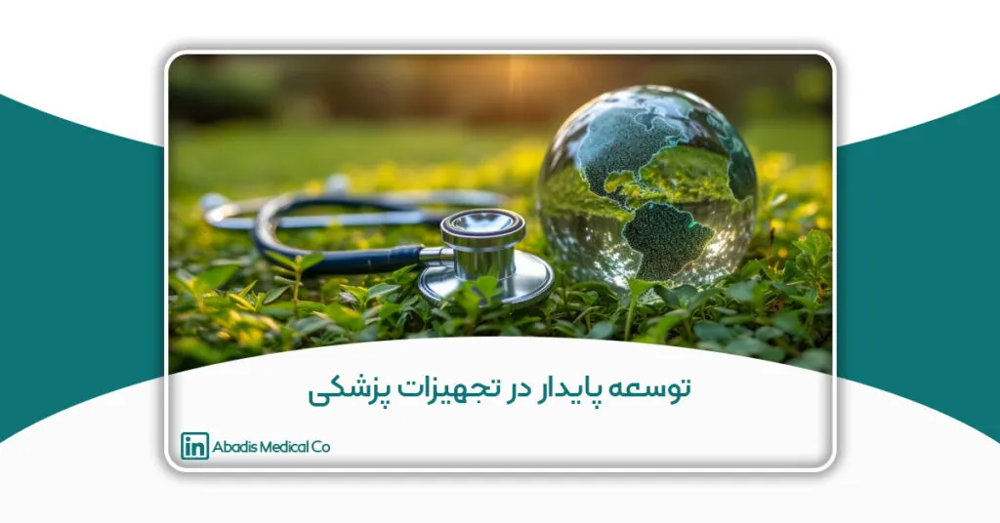

چکیده
توسعه پایدار بهعنوان یک رویکرد جامع در جهت حفاظت از محیط زیست، بهبود کیفیت زندگی بشر و بهرهبرداری بهینه از منابع طبیعی، به یک ضرورت جهانی تبدیل شده است. در این مقاله، ارتباط میان توسعه پایدار و صنعت تجهیزات پزشکی بررسی شده است. این صنعت که نقشی حیاتی در بهبود سلامت انسانها ایفا میکند، همزمان با چالشهایی نظیر مصرف زیاد پلاستیک، پسماندهای پزشکی و اثرات منفی زیستمحیطی روبرو است. مقاله به معرفی اهداف جهانی توسعه پایدار (SDGs) و ارکان آن شامل ابعاد اقتصادی، اجتماعی و زیستمحیطی پرداخته و نقش کلیدی صنعت تجهیزات پزشکی در تحقق این اهداف را مورد توجه قرار داده است. همچنین، به راهکارهایی برای همراستاسازی این صنعت با اهداف توسعه پایدار، مانند استفاده از مواد زیستتخریبپذیر و طراحیهای قابل بازیافت، اشاره شده است.
در این راستا، شرکتهایی نظیر Serres، Philips و مخازن طبی آبادیس بهعنوان نمونههایی از پیشگامان در این مسیر معرفی شدهاند. در نهایت، مقاله تأکید دارد که برای دستیابی به یک صنعت تجهیزات پزشکی پایدار در ایران و منطقه، مشارکت همهجانبه از سوی تمامی ذینفعان، از جمله دولتها، صنایع و مصرفکنندگان، ضروری است.
کلمات کلیدی: توسعه پایدار، تجهیزات پزشکی، محیط زیست، مواد زیستتخریبپذیر، بازیافت، مسئولیت اجتماعی، نوآوری سبز، پسماند پزشکی، شرکت مخازن طبی آبادیس
مقدمه
توسعه پایدار مفهومی است که هدف آن ایجاد تعادل بین رشد اقتصادی، حفظ محیط زیست و بهبود کیفیت زندگی اجتماعی است. این مفهوم، اساس ساخت آیندهای پایدار و مسئولانه برای نسلهای حال و آینده به شمار میآید.
در این میان، صنعت تجهیزات پزشکی به عنوان یکی از ارکان حیاتی نظام سلامت، نقشی کلیدی در بهبود کیفیت زندگی ایفا میکند. با این حال، تولید، مصرف و دفع تجهیزات پزشکی نیز میتواند پیامدهای قابلتوجهی برای محیط زیست داشته باشد؛ از جمله تولید زبالههای عفونی، مصرف بالای انرژی و استفاده از مواد غیرقابل بازیافت.
همراستا ساختن صنعت تجهیزات پزشکی با اصول توسعه پایدار، نه تنها به حفظ منابع طبیعی و کاهش آسیبهای زیستمحیطی کمک میکند، بلکه ضامن کارآمدی و آیندهنگری در نظام سلامت نیز خواهد بود.
در این مسیر، برخی شرکتهای تولیدکننده تجهیزات پزشکی نیز تلاش کردهاند گامهایی مؤثر در جهت توسعه پایدار بردارند. از جمله شرکت مخازن طبی آبادیس، که به عنوان نخستین و بزرگترین تولیدکننده کیسه ساکشن یکبار مصرف در ایران و خاورمیانه، رویکردی مسئولانه نسبت به محیط زیست و سلامت جامعه در پیش گرفته است.
توسعه پایدار چیست و چرا اهمیت دارد؟
توسعه پایدار مفهومی است که در سالهای اخیر به یکی از اصول کلیدی در سیاستگذاریهای ملی و جهانی تبدیل شده است. به طور ساده، این مفهوم به معنای برآورده کردن نیازهای نسل کنونی است، بدون آنکه توانایی نسلهای آینده برای تأمین نیازهای خود تهدید شود.
در گذشته، توسعه اغلب به رشد اقتصادی محدود میشد؛ اما تجربههای زیانبار ناشی از بهرهبرداری بیرویه از منابع طبیعی، تخریب محیط زیست و نادیده گرفتن عدالت اجتماعی، نشان داد که چنین توسعهای ناپایدار است. از همین رو، توسعه پایدار مطرح شد تا میان رشد اقتصادی، حفظ محیط زیست و عدالت اجتماعی توازن ایجاد کند.
در دنیای امروز، توسعه پایدار دیگر فقط دغدغه دولتها و سازمانهای بینالمللی نیست؛ بلکه به یک وظیفه مشترک برای همه انسانها، کسبوکارها، صنایع، نهادهای آموزشی و جامعه مدنی تبدیل شده است.
با توجه به بحرانهایی همچون تغییرات اقلیمی، کمبود منابع طبیعی، گسترش نابرابریها و آلودگیهای زیستمحیطی، اهمیت توسعه پایدار از هر زمان دیگری بیشتر شده است. آیندهای پایدار فقط زمانی ممکن است که همه تصمیمها – از سیاستگذاری کلان گرفته تا تولید یک محصول – بر اساس اصول پایداری طراحی شوند.
اهداف جهانی توسعه پایدار (SDGs)
در سال ۲۰۱۵، سازمان ملل متحد با مشارکت ۱۹۳ کشور، سندی جهانی با عنوان دستور کار ۲۰۳۰ برای توسعه پایدار تصویب کرد. محور این سند، ۱۷ هدف توسعه پایدار (Sustainable Development Goals) است؛ اهدافی جامع که با در نظر گرفتن چالشهای اجتماعی، زیستمحیطی و اقتصادی، نقشه راهی برای رسیدن به جهانی پایدار و عادلانه ترسیم میکنند. در ادامه به ۱۷ هدف توسعه پایدار در سند سازمان ملل میپردازیم:
- پایان دادن به فقر: هدف نخست تلاش دارد فقر مطلق و نسبی را در همه اشکالش، در سراسر جهان از بین ببرد.
- ریشهکنی گرسنگی: دسترسی همگانی به غذای کافی، سالم و مغذی و ترویج کشاورزی پایدار را دنبال میکند.
- سلامت و رفاه برای همه: بر ارتقای سلامت جسمی و روانی، کاهش مرگومیر، دسترسی برابر به خدمات درمانی و بهبود ایمنی نظام سلامت تأکید دارد.
- آموزش با کیفیت: دسترسی همگانی به آموزش رایگان، برابر و با کیفیت را هدفگذاری کرده است.
- برابری جنسیتی: توانمندسازی زنان و دختران، رفع تبعیض و ایجاد فرصتهای برابر در همه زمینهها را دنبال میکند.
- دسترسی به آب پاک و بهداشت: مدیریت پایدار منابع آبی، بهداشت محیط، و تضمین دسترسی به آب سالم برای همه از اهداف کلیدی این بخش است.
- انرژی پاک و قابلدسترسی: دستیابی به انرژی پایدار، مقرونبهصرفه و تمیز برای همه، با تمرکز بر بهرهوری انرژی و انرژیهای تجدیدپذیر.
- کار شایسته و رشد اقتصادی: افزایش اشتغال پایدار، حمایت از حقوق کارگران و رشد اقتصادی فراگیر و مقاوم را هدف گرفته است.
- صنعت، نوآوری و زیرساخت: توسعه زیرساختهای مقاوم، نوسازی صنعتی و ترویج نوآوریهای فناورانه را دنبال میکند.
- کاهش نابرابریها: تلاش برای کاهش شکافهای درآمدی، فرصتهای نابرابر و تبعیضهای اجتماعی و اقتصادی.
- شهرها و جوامع پایدار: توسعه شهری هوشمند، کاهش آلودگی، پسماند و افزایش تابآوری شهرها در برابر بلایای طبیعی.
- تولید و مصرف مسئولانه: کاهش ضایعات، استفاده بهینه از منابع، و تغییر الگوهای مصرف و تولید در راستای حفظ محیط زیست.
- اقدام برای اقلیم: اقدامات فوری برای مقابله با تغییرات اقلیمی و کاهش اثرات زیستمحیطی ناشی از فعالیتهای انسانی.
- حفظ منابع دریایی: مدیریت پایدار اقیانوسها، دریاها و منابع دریایی و کاهش آلودگیهای ناشی از پلاستیک و زبالههای صنعتی.
- حفاظت از اکوسیستمهای زمینی: مقابله با جنگلزدایی، تخریب زیستگاهها و کاهش تنوع زیستی در سطح جهانی.
- صلح، عدالت و نهادهای پاسخگو: دسترسی به عدالت، کاهش خشونت، فساد و حمایت از نهادهای قانونی و شفاف.
- مشارکت جهانی: تقویت همکاریهای بینالمللی، انتقال فناوری و منابع برای حمایت از تحقق سایر اهداف.
از میان این اهداف، برخی بهطور مستقیم با صنعت تجهیزات پزشکی و سلامت جامعه در ارتباط هستند. بهویژه هدف سوم (سلامت و رفاه)، که بر گسترش دسترسی همگانی به خدمات درمانی و بهداشتی تأکید دارد، و همچنین هدف نهم (نوآوری، زیرساخت و صنعت) که توسعه صنایع پاک و نوآورانه را در مرکز توجه قرار میدهد.
هدف دوازدهم (تولید و مصرف مسئولانه) نیز برای صنایع پزشکی بسیار حیاتی است؛ زیرا تولید انبوه تجهیزات پزشکی یکبار مصرف، مصرف منابع و مدیریت پسماندهای خطرناک را به چالش کشیده است. همچنین هدف سیزدهم (اقدام عاجل برای مقابله با تغییرات اقلیمی) از تمام بخشها، از جمله صنعت سلامت، میخواهد مسئولیتپذیری بیشتری نسبت به انتشار گازهای گلخانهای و مصرف انرژی داشته باشند.
امروزه بسیاری از کشورها، سیاستهای توسعهای خود را بر پایه این اهداف جهانی تنظیم کردهاند. این اهداف، به عنوان نقشه راهی برای آیندهای پایدار، در برنامهریزیهای اقتصادی، اجتماعی و زیستمحیطی کشورها و سازمانها گنجانده میشوند.
در صنعت تجهیزات پزشکی نیز، SDGs راهنمایی روشن برای شرکتها، سرمایهگذاران، و دولتها ارائه میدهد تا مسیر توسعه فناوریهای سلامت را با در نظر گرفتن محیط زیست، عدالت اجتماعی و بهرهوری اقتصادی طی کنند. به همین دلیل، آشنایی با این اهداف و تلاش برای همراستاسازی استراتژیها با آنها، نهتنها مسئولیتپذیری اجتماعی برندها را تقویت میکند، بلکه جایگاه آنها را در بازارهای بینالمللی ارتقا میدهد.
ارکان توسعه پایدار
توسعه پایدار، بهعنوان یک الگوی جهانی برای پیشبرد برنامههای ملی و بینالمللی، بر سه رکن اصلی اقتصادی، اجتماعی و زیستمحیطی استوار است. این ارکان در حقیقت پایههای تحقق اهداف توسعه پایدار را تشکیل میدهند و در کنار یکدیگر، زمینهای برای دستیابی به یک آینده عادلانه، پایدار و متوازن فراهم میآورند.
۱. رکن اقتصادی: رشد و بهرهوری پایدار
رکن اقتصادی توسعه پایدار بر رشد اقتصادی فراگیر، بهرهوری بالا و استفاده بهینه از منابع مالی و انسانی تأکید دارد. هدف این رکن، ایجاد رشد اقتصادی است که به گونهای متوازن و پایدار باشد که نه تنها منابع را برای نسلهای آینده حفظ کند، بلکه فرصتهای شغلی، رشد و بهبود سطح زندگی برای تمام مردم فراهم کند.
در سطح ملی، تصمیمگیریهای اقتصادی باید مبتنی بر بهرهوری بالا، اشتغالزایی پایدار و به حداقل رساندن فقر و نابرابریهای اقتصادی باشد. در سطح صنعتی، شرکتها و کسبوکارها باید به گونهای عمل کنند که علاوه بر رشد و سودآوری، تأثیرات منفی بر اقتصاد کلان و منابع طبیعی را کاهش دهند. در این راستا، صنعت تجهیزات پزشکی باید بر نوآوری، تولید فناوریهای کارآمد و کاهش هزینهها تأکید داشته باشد تا از یک سو به بهرهوری و رشد اقتصادی کمک کند و از سوی دیگر منابع و انرژی را به شکل پایدار مصرف کند.
۲. رکن اجتماعی: عدالت و رفاه انسانی
رکن اجتماعی توسعه پایدار بر عدالت اجتماعی، بهبود کیفیت زندگی و رفاه اجتماعی تأکید دارد. این رکن، به ویژه بر برابری اجتماعی و حقوق بشر متمرکز است و هدف آن، فراهم کردن شرایطی است که تمامی افراد از فرصتهای برابر در زمینههای مختلف مانند آموزش، سلامت، اشتغال و امنیت برخوردار شوند.
در سطح ملی، سیاستگذاریهای اجتماعی باید به گونهای طراحی شوند که عدالت اجتماعی را ارتقا دهند و از بهوجود آمدن نابرابریهای اجتماعی جلوگیری کنند. به عنوان مثال، دولتها و سازمانها باید بر کاهش فقر، افزایش دسترسی به خدمات بهداشتی و آموزشی و تأمین رفاه عمومی تمرکز کنند. در سطح صنعتی نیز، شرکتها باید به حقوق و رفاه کارکنان توجه ویژه داشته باشند، از تبعیض جلوگیری کنند و شرایط کاری شایستهای فراهم کنند.
در صنعت تجهیزات پزشکی، تأمین سلامت و رفاه جامعه یکی از اهداف اصلی است. برای مثال، تولید و توزیع تجهیزات پزشکی با کیفیت و مقرونبهصرفه نه تنها به ارتقای سلامت عمومی کمک میکند، بلکه میتواند عدالت دسترسی به خدمات بهداشتی را در مناطق کمبرخوردار فراهم کند.
۳. رکن زیستمحیطی: حفاظت از منابع طبیعی
رکن زیستمحیطی توسعه پایدار به حفاظت از محیط زیست، منابع طبیعی و کاهش تأثیرات منفی فعالیتهای انسانی بر اکوسیستمها میپردازد. این رکن بهویژه در مقابله با تغییرات اقلیمی، کاهش آلودگیها و استفاده پایدار از منابع طبیعی اهمیت دارد. هدف این رکن، کاهش اثرات منفی بر محیط زیست و ایجاد شرایطی است که منابع طبیعی برای نسلهای آینده قابل استفاده باشد.
در سطح ملی، سیاستهای زیستمحیطی باید شامل کاهش انتشار گازهای گلخانهای، مدیریت پسماند، و حفاظت از منابع آبی و جنگلی باشد. در سطح صنعتی نیز، صنایع باید از فرآیندهای تولید پایدار، استفاده از انرژیهای تجدیدپذیر و کاهش ضایعات و آلایندهها استفاده کنند. در صنعت تجهیزات پزشکی، بهویژه با توجه به تولید تجهیزات پزشکی یکبار مصرف، مدیریت صحیح پسماند و مواد شیمیایی از اهمیت زیادی برخوردار است.
نقش ارکان توسعه پایدار در تصمیمگیریهای صنعتی و ملی
در تصمیمگیریهای ملی، این سه رکن بهطور همزمان در نظر گرفته میشوند. بهعنوان مثال، دولتها باید تصمیمهایی اتخاذ کنند که به رشد اقتصادی کمک کنند، اما در عین حال عدالت اجتماعی و حفاظت از محیط زیست را نیز در نظر بگیرند. در بسیاری از کشورها، سیاستهای زیستمحیطی و اجتماعی در کنار برنامههای اقتصادی تدوین و بهصورت همزمان اجرا میشوند تا از توسعه متوازن و پایدار اطمینان حاصل شود.
در سطح صنعتی، تصمیمات باید با توجه به این سه رکن اتخاذ شوند. برای مثال، در صنعت تجهیزات پزشکی، تولید کنندگان باید نوآوریهای فناورانه را با هدف بهبود کارایی و کاهش هزینهها پیش ببرند (رکن اقتصادی)، اما در عین حال از روشهای تولید پایدار و کاهش ضایعات و مصرف انرژی نیز استفاده کنند (رکن زیستمحیطی). همچنین باید در نظر داشته باشند که محصولات تولیدی به دسترسی همه اقشار جامعه به خدمات درمانی و بهداشتی کمک کنند (رکن اجتماعی).
در نهایت، توسعه پایدار تنها در صورتی ممکن است که این سه رکن بهطور همزمان و در تعامل با یکدیگر پیادهسازی شوند و همراستایی داشته باشند. این امر نهتنها به رفع چالشهای جهانی کمک میکند، بلکه فرصتهای جدیدی برای رشد و توسعه فراهم میآورد.
عوامل کلیدی مؤثر در تحقق توسعه پایدار
تحقق اهداف توسعه پایدار نیازمند همکاری و همافزایی میان عوامل مختلف است. در این راستا، چهار عامل کلیدی و اساسی وجود دارند که میتوانند به تسریع و موفقیت این روند کمک کنند: نوآوری و فناوری سبز، سیاستگذاری و قانونگذاری، فرهنگسازی عمومی و آموزش، و مسئولیتپذیری شرکتها و صنایع. در این بخش، به تفصیل به هر یک از این عوامل میپردازیم و توضیح میدهیم که چگونه میتوانند در تحقق توسعه پایدار مؤثر باشند.
۱. نوآوری و فناوری سبز
نوآوری و فناوری سبز از ارکان اصلی پیشبرد اهداف توسعه پایدار هستند. در دنیای امروز، نوآوریهای فناورانه نه تنها در تسهیل روندهای اقتصادی و اجتماعی نقش دارند، بلکه میتوانند به کاهش اثرات منفی بر محیط زیست کمک کنند. فناوری سبز به مجموعهای از تکنولوژیها اطلاق میشود که برای کاهش تأثیرات منفی بر محیط زیست طراحی شدهاند.
در صنعت تجهیزات پزشکی، برای مثال، توسعه فناوریهایی مانند مواد تجزیهپذیر زیستی یا کاهش مصرف انرژی در فرآیند تولید میتواند به کاهش پسماندها و استفاده بهینه از منابع طبیعی کمک کند. همچنین، نوآوری در فرآیندهای تولید و بستهبندی میتواند به کاهش آلودگیهای زیستمحیطی و افزایش کارایی در استفاده از منابع منجر شود. بهطور کلی، بدون بهرهگیری از فناوریهای سبز و نوآوری، رسیدن به توسعه پایدار غیرممکن خواهد بود.
۲. سیاستگذاری و قانونگذاری
پشتیبانی دولتها از طریق سیاستگذاری و قانونگذاری در جهت توسعه پایدار نقش حیاتی دارد. دولتها باید قوانین و سیاستهای حمایتیای وضع کنند که منجر به رشد پایدار اقتصادی، حفاظت از محیط زیست و تأمین عدالت اجتماعی شود. در واقع، سیاستگذاریهای زیستمحیطی باید به شکلی باشد که صنعت و کسبوکارها را به سمت تولید محصولات و خدمات پایدار هدایت کند.
برای مثال، در صنعت تجهیزات پزشکی، دولتها میتوانند مشوقهایی برای تولیدکنندگان در زمینه استفاده از مواد تجزیهپذیر یا کاهش انتشار گازهای گلخانهای به تصویب برسانند. همچنین، قوانین مربوط به مدیریت پسماند و Recycling تجهیزات پزشکی میتواند به کاهش آسیبهای زیستمحیطی کمک کند. در سطح کلان، سیاستهای اقتصادی باید همگام با برنامههای زیستمحیطی و اجتماعی پیش بروند تا توسعهای پایدار و همراستا با اهداف جهانی ایجاد کنند.
۳. فرهنگسازی عمومی و آموزش
آموزش و فرهنگسازی عمومی، یکی از مهمترین ارکان برای تحقق توسعه پایدار است. برای رسیدن به یک جامعه پایدار، باید نگرشها و رفتارهای افراد تغییر یابد و فرهنگ مصرف مسئولانه و حفاظت از محیط زیست در میان مردم نهادینه شود. آموزش در تمامی سطوح – از مدارس و دانشگاهها گرفته تا شرکتها و سازمانها – باید به گونهای باشد که افراد را به سمت توسعه پایدار هدایت کند.
در صنعت تجهیزات پزشکی، فرهنگسازی در این حوزه میتواند به معنای افزایش آگاهی از نحوه استفاده و دفع صحیح تجهیزات پزشکی یکبار مصرف باشد. همچنین، آموزش و آگاهی در رابطه با اثرات منفی برخی از مواد شیمیایی و پسماندها میتواند به صنایع در تولید محصولات با کمترین تأثیر زیستمحیطی کمک کند. بدون این فرهنگسازی، تغییرات پایدار در جامعه و صنعت تقریباً غیرممکن خواهد بود.
۴. مسئولیتپذیری شرکتها و صنایع
یکی از مؤلفههای کلیدی در تحقق توسعه پایدار، مسئولیتپذیری شرکتها و صنایع است. به طور سنتی، بسیاری از کسبوکارها بر افزایش سود و رشد اقتصادی تمرکز دارند، اما در دنیای امروز، مسئولیتهای اجتماعی و زیستمحیطی شرکتها اهمیت بیشتری پیدا کرده است. شرکتها باید مسئولیتپذیری اجتماعی و زیستمحیطی خود را با جدیت بیشتری پیگیری کنند.
در صنعت تجهیزات پزشکی، برای مثال، شرکتها باید استانداردهای زیستمحیطی و اجتماعی را رعایت کنند و مسئولیت خود را در قبال سلامت جامعه و محیط زیست در نظر بگیرند. این میتواند شامل انتخاب مواد سازگار با محیط زیست، کاهش مصرف انرژی و منابع در فرآیند تولید، و بهینهسازی پسماندها باشد. همچنین، پاسخگویی به انتقادات و نظرات جامعه و استفاده از روندهای سبز و مسئولانه در بازاریابی و تبلیغات نیز از الزامات این مسئولیت است.
در نهایت، همکاری میان دولتها، صنایع و جامعه مدنی برای ایجاد یک چارچوب جامع از سیاستها و شیوههای مسئولانه میتواند به تسریع روند توسعه پایدار کمک کند.
تحقق توسعه پایدار نه تنها به تلاش دولتها، بلکه به مشارکت فعال صنایع، نهادهای مدنی و جوامع نیاز دارد. نوآوریهای سبز، سیاستگذاریهای حمایتی، فرهنگسازی عمومی و مسئولیتپذیری صنایع چهار عاملی هستند که بهطور مستقیم در این مسیر مؤثرند. تنها با رعایت این اصول، میتوان به هدفهای توسعه پایدار دست یافت و جامعهای متعادل، عادلانه و سالمتر ایجاد کرد.
نقش کسبوکارها و صنایع در توسعه پایدار
۱. اهمیت مسئولیتپذیری اجتماعی و زیستمحیطی
مسئولیتپذیری اجتماعی و زیستمحیطی برای کسبوکارها به معنای تعهد به رعایت اصول اخلاقی در فرآیندهای تجاری و تولیدی است که فراتر از سودآوری صرف میرود. کسبوکارها نه تنها باید به سودآوری توجه کنند، بلکه باید اثرات اجتماعی و زیستمحیطی فعالیتهای خود را نیز در نظر بگیرند.
مسئولیت اجتماعی در صنایع میتواند شامل اقداماتی مانند ارائه حقوق عادلانه به کارگران، ارتقاء شرایط کاری و اشتغال باشد. در همین راستا، کسبوکارها میتوانند از طریق کاهش نابرابریهای اجتماعی، حمایت از برنامههای بهداشتی و آموزشی، و کمک به جوامع محلی، تأثیر مثبتی بر جامعه بگذارند. به طور خاص، در صنعت تجهیزات پزشکی، این مسئولیت میتواند شامل تولید محصولاتی با کیفیت بالا و دسترسی راحت به آنها برای افراد کمبرخوردار باشد.
مسئولیت زیستمحیطی نیز شامل اقداماتی است که شرکتها برای کاهش اثرات منفی خود بر محیط زیست انجام میدهند. این اقدامات شامل کاهش مصرف انرژی، استفاده از منابع تجدیدپذیر، مدیریت پسماندها و استفاده از مواد سازگار با محیط زیست میشود. صنایع باید به طور مداوم به دنبال روشهای تولید سبز و بهینهسازی فرآیندها باشند تا تأثیرات منفی خود بر محیط زیست را به حداقل برسانند. در صنعت تجهیزات پزشکی، استفاده از مواد تجزیهپذیر و کاهش مصرف انرژی در خطوط تولید میتواند گامی مؤثر در این راستا باشد.
۲. اثرگذاری برندها در آموزش، فرهنگسازی و سیاستگذاری
برندها به عنوان نمایندگان صنعتی و تجاری، میتوانند نقش ویژهای در آموزش و فرهنگسازی عمومی ایفا کنند. مصرفکنندگان و جوامع به برندها توجه زیادی دارند و بسیاری از آنها ترجیح میدهند از محصولات و خدمات برندهایی استفاده کنند که تعهدات اجتماعی و زیستمحیطی خود را جدی میگیرند.
از طریق آموزش و فرهنگسازی، برندها میتوانند به افراد و جوامع در خصوص اهمیت توسعه پایدار و حفاظت از محیط زیست آگاهی دهند. بهعنوان مثال، در صنعت تجهیزات پزشکی، برندها میتوانند مصرفکنندگان را در مورد اهمیت استفاده از محصولات با کیفیت و مواد تجزیهپذیر آگاه کنند و به آنها آموزش دهند که چگونه میتوانند در حفظ محیط زیست مشارکت کنند.
برندها همچنین میتوانند بر سیاستگذاریهای دولتی تأثیر بگذارند. بسیاری از برندهای موفق و بزرگ در صنایع مختلف با مشارکت در تدوین سیاستها و استانداردهای صنعتی، نقش مؤثری در شکلدهی به سیاستهای اجتماعی و زیستمحیطی دارند. بهطور مثال، برندهایی که در صنعت تجهیزات پزشکی فعالیت میکنند، میتوانند در تدوین استانداردهای زیستمحیطی و قوانین مربوط به تولید و مصرف محصولات پزشکی مشارکت کنند و بر تصمیمات سیاستگذاران تأثیرگذار باشند.
۳. آیندهنگری به عنوان یک مزیت رقابتی در بازار جهانی
در دنیای تجاری امروز، آیندهنگری یکی از مزایای رقابتی اساسی است که میتواند شرکتها را در بازارهای جهانی موفقتر کند. شرکتهایی که به توسعه پایدار توجه دارند، میتوانند در آینده به مزایای رقابتی دست یابند. این شرکتها نه تنها از نظر اقتصادی سودآور خواهند بود، بلکه در بازار جهانی به عنوان برندهای پایدار و مسئولیتپذیر شناخته میشوند.
شرکتهایی که در تولید محصولات و خدمات خود به پایداری، کاهش تأثیرات زیستمحیطی و مسئولیت اجتماعی توجه دارند، معمولاً میتوانند پیشگام در ایجاد روندهای جدید و نوآورانه باشند. این شرکتها به راحتی میتوانند وفاداری مشتریان را جلب کنند و برند خود را به عنوان یک انتخاب مسئولانه در بازار جهانی معرفی نمایند. بهویژه در بازارهایی که حساسیت به محیط زیست و مسئولیت اجتماعی در آنها در حال افزایش است، این شرکتها از مزیت رقابتی بالایی برخوردار خواهند بود.
در صنعت تجهیزات پزشکی، آیندهنگری در طراحی و تولید محصولات با کیفیت و بهینه میتواند به شرکتها کمک کند تا در بازارهای جهانی جایگاه خود را تثبیت کنند. استفاده از فنآوریهای نوین و سازگار با محیط زیست به شرکتها این امکان را میدهد که در رقابت با سایر شرکتها پیشی بگیرند و در عین حال به توسعه پایدار کمک کنند.
در نهایت، کسبوکارها و صنایع بهویژه در زمینههای مختلفی مانند تجهیزات پزشکی، باید مسئولیتپذیری اجتماعی و زیستمحیطی خود را جدی بگیرند، فرهنگسازی و آموزش را در اولویت قرار دهند، و آیندهنگری را بهعنوان یک مزیت رقابتی در بازار جهانی مد نظر داشته باشند. این نه تنها باعث موفقیت تجاری خواهد شد، بلکه به تحقق اهداف توسعه پایدار نیز کمک خواهد کرد و در نهایت به ساخت جهانی بهتر و پایدارتر میانجامد.
توسعه پایدار در صنعت تجهیزات پزشکی
صنعت تجهیزات پزشکی یکی از صنایع کلیدی در تأمین سلامت و رفاه جامعه است و به همین دلیل، توجه به توسعه پایدار در این بخش از اهمیت ویژهای برخوردار است. در دنیای امروز، با افزایش نیاز به تجهیزات پزشکی و فناوریهای جدید، صنعت پزشکی با چالشهای مختلف زیستمحیطی روبهرو است که نیازمند توجه و بازنگری در فرآیندهای طراحی، تولید، مصرف و دفع این تجهیزات است. در این بخش، به نقش تجهیزات پزشکی در سلامت جامعه، چالشهای زیستمحیطی این صنعت و لزوم بازنگری در فرآیندهای آن پرداخته میشود.
۱. نقش تجهیزات پزشکی در سلامت و رفاه جامعه
تجهیزات پزشکی ابزارهایی هستند که برای تشخیص، درمان، پیشگیری، و نظارت بر وضعیت سلامتی بیماران به کار میروند. این تجهیزات شامل دستگاههای تشخیصی، ابزارهای جراحی، وسایل کمک درمانی، و دستگاههای پایش وضعیت سلامت میشوند که به طور مستقیم بر کیفیت زندگی انسانها تأثیر میگذارند.
صنعت تجهیزات پزشکی در ارتقاء کیفیت خدمات درمانی و افزایش امید به زندگی نقشی حیاتی ایفا میکند. پیشرفتهای پزشکی در تشخیص بیماریها، درمانهای دقیقتر و مدیریت بهینه بیماریها از طریق استفاده از این تجهیزات امکانپذیر شده است. به عنوان مثال، استفاده از دستگاههای MRI و CT Scan در تشخیص بیماریهای داخلی، دستگاههای دیالیز برای بیماران کلیوی، و دستگاههای کمک تنفسی برای افراد مبتلا به مشکلات تنفسی، نمونههایی از کاربردهای مهم تجهیزات پزشکی هستند که به ارتقاء سلامت عمومی و بهبود کیفیت زندگی افراد کمک میکنند.
با این حال، با افزایش تقاضا برای این تجهیزات، چالشهای جدیدی نیز برای محیط زیست و منابع طبیعی به وجود آمده است که نیازمند توجه و مدیریت صحیح است.
۲. چالشهای زیستمحیطی در این صنعت
صنعت تجهیزات پزشکی، همانند دیگر صنایع، با چالشهای زیستمحیطی مختلفی مواجه است که تاثیرات منفی بر محیط زیست میگذارند. از جمله این چالشها میتوان به پسماندهای پزشکی، مصرف بالای پلاستیک، مصرف انرژی بالا و مواد شیمیایی مضر اشاره کرد.
- پسماندهای پزشکی: تجهیزات پزشکی پس از استفاده به عنوان پسماندهای عفونی و خطرناک شناخته میشوند. این پسماندها به دلیل خطرات بهداشتی و زیستمحیطی نیاز به مدیریت صحیح دارند. زبالههای پزشکی ممکن است شامل محصولات یکبار مصرف، بستهبندیها و مواد شیمیایی باشند که اگر به درستی دفع نشوند، میتوانند موجب آلودگی آبها، خاک و هوا شوند.
- مصرف پلاستیک: بسیاری از تجهیزات پزشکی یکبار مصرف، همچون سرنگها، دستکشها، ماسکها، و تجهیزات بستهبندی از پلاستیک ساخته میشوند. این پلاستیکها در طبیعت تجزیه نمیشوند و به آلودگی محیط زیست و مشکلات زیستمحیطی بلندمدت منجر میشوند. استفاده مداوم از پلاستیک در این صنعت، چالش بزرگی برای تحقق توسعه پایدار ایجاد میکند.
- مصرف انرژی و منابع طبیعی: برخی تجهیزات پزشکی مانند دستگاههای تصویربرداری، در فرآیند تولید و بهرهبرداری انرژی زیادی مصرف میکنند. این مصرف بالا به طور مستقیم بر ردپای کربنی صنعت پزشکی تاثیرگذار است.
این چالشها نیاز به اقدامات فوری و مؤثر برای کاهش اثرات زیستمحیطی این صنعت دارند تا بتوانند در راستای توسعه پایدار گام بردارند.
۳. نیاز به بازنگری در طراحی، تولید، مصرف و دفع تجهیزات پزشکی
برای تحقق توسعه پایدار در صنعت تجهیزات پزشکی، بازنگری در فرآیندهای طراحی، تولید، مصرف و دفع تجهیزات پزشکی امری ضروری است. این بازنگری میتواند شامل موارد زیر باشد:
- طراحی سبز: یکی از مهمترین اقدامات در جهت توسعه پایدار، طراحی سبز و استفاده از مواد تجزیهپذیر و سازگار با محیط زیست در تولید تجهیزات پزشکی است. طراحان و تولیدکنندگان باید به دنبال کاهش استفاده از پلاستیکها و مواد شیمیایی مضر باشند و به جای آن از مواد قابل بازیافت و مواد طبیعی استفاده کنند. علاوه بر این، تجهیزات باید طراحی شوند تا دوره عمر طولانیتری داشته باشند و نیاز به تعویض مکرر کاهش یابد.
- تولید بهینه: کاهش مصرف انرژی در فرآیندهای تولید و استفاده از منابع تجدیدپذیر در تولید تجهیزات پزشکی از اهمیت زیادی برخوردار است. کارخانهها و تولیدکنندگان باید روشهای تولید بهینه را به کار گیرند که منجر به کاهش پسماندها و صرفهجویی در مصرف منابع طبیعی شوند.
- مدیریت مصرف: در حین مصرف تجهیزات پزشکی نیز باید به مدیریت بهینه منابع توجه شود. آموزش بیماران و کادر درمانی در خصوص استفاده صحیح از تجهیزات و کاهش مصرف بیرویه میتواند در کاهش اثرات منفی این صنعت بر محیط زیست مؤثر باشد.
- دفع مسئولانه: دفع ایمن و مؤثر تجهیزات پزشکی پس از استفاده یکی از چالشهای اصلی است. برنامهریزی برای جمعآوری و بازیافت تجهیزات پزشکی پس از استفاده، میتواند از آلودگیهای زیستمحیطی جلوگیری کند. توسعه روشهای بازیافت مواد پلاستیکی و بازسازی تجهیزات پزشکی به عنوان یک گزینه برای کاهش پسماندها میتواند در این راستا کمک کند.
توسعه پایدار در صنعت تجهیزات پزشکی نیازمند تغییرات اساسی در تمامی جنبههای این صنعت است. از طراحی و تولید گرفته تا مصرف و دفع، باید ابتکارات جدید و مسئولانهای برای کاهش اثرات زیستمحیطی این صنعت اتخاذ شود. تنها با بازنگری در این فرآیندها میتوان صنعت تجهیزات پزشکی را بهسمت توسعهای پایدار هدایت کرد که هم به سلامت جامعه و هم به حفاظت از محیط زیست توجه دارد.
نمونههایی از همراستاسازی تجهیزات پزشکی با توسعه پایدار
توسعه پایدار در صنعت تجهیزات پزشکی نه تنها یک الزام اخلاقی، بلکه یک فرصت برای ارتقاء کیفیت زندگی انسانها و کاهش اثرات منفی بر محیط زیست است. در این بخش، به برخی از راهکارهای پایدار در طراحی و تولید تجهیزات پزشکی پرداخته خواهد شد، همچنین به شرکتهایی اشاره خواهیم کرد که در این راستا پیشگام بودهاند.
توسعه پایدار در صنعت تجهیزات پزشکی: راهکارها و رویکردها
- استفاده از مواد زیستتخریبپذیر: یکی از مهمترین چالشها در صنعت تجهیزات پزشکی، استفاده گسترده از مواد پلاستیکی است که تجزیهپذیر نیستند و به آلودگی محیط زیست میافزایند. استفاده از مواد زیستتخریبپذیر در تولید تجهیزات میتواند به کاهش این اثرات منفی کمک کند. به عنوان مثال، در تولید محصولات پزشکی یکبار مصرف مانند دستکشها، سرنگها، و پوششها، میتوان از مواد طبیعی و تجزیهپذیر استفاده کرد که پس از مصرف به راحتی تجزیه شده و به محیط زیست آسیبی وارد نکنند.
- طراحی قابل بازیافت: طراحی محصولات به گونهای که بتوانند بازیافت شوند، یکی دیگر از راهکارهای مهم در جهت توسعه پایدار است. در بسیاری از تجهیزات پزشکی، مانند دستگاههای تصویربرداری یا ابزارهای جراحی، میتوان از مواد قابل بازیافت استفاده کرد و پس از پایان عمر مفید این تجهیزات، مواد اصلی آنها برای استفاده مجدد جمعآوری شوند.
- صرفهجویی در انرژی: بهکارگیری فناوریهای سبز در تولید تجهیزات پزشکی میتواند مصرف انرژی را در مراحل تولید و بهرهبرداری کاهش دهد. بهینهسازی فرآیندها و استفاده از منابع انرژی تجدیدپذیر در کارخانهها و مراکز تولید، گامی مؤثر در کاهش ردپای کربنی این صنعت به شمار میآید.
شرکتهای پیشگام در همسویی با توسعه پایدار
شرکت Serres:
این شرکت خارجی با تمرکز بر توسعه پایدار در صنعت تجهیزات پزشکی، به تولید محصولاتی با طراحی قابل بازیافت و مواد زیستتخریبپذیر پرداخته است. Serres بهویژه در تولید محصولات یکبار مصرف پزشکی، تلاش دارد تا اثرات منفی محیطی این محصولات را کاهش دهد و به افزایش پایداری در این صنعت کمک کند.
شرکت Baxter International:
این شرکت بزرگ در صنعت تجهیزات پزشکیداروسازی، به ویژه در زمینه تولید محصولات دیالیز، به رویکردهایی در جهت کاهش مصرف انرژی و استفاده از مواد سازگار با محیط زیست توجه ویژهای داشته است. Baxter در تلاش است تا تمامی محصولات خود را با استفاده از مواد قابل بازیافت طراحی کند و تولیدات خود را به گونهای بهینه کند که کمترین اثر منفی را بر محیط زیست داشته باشند.
شرکت Philips Healthcare:
شرکت فیلیپس با تولید محصولات پیشرفته در زمینه سلامت، به استفاده از منابع انرژی تجدیدپذیر و کاهش ضایعات در فرآیند تولید خود پرداخته است. همچنین، فیلیپس در تلاش است تا از مواد سازگار با محیط زیست در تولید تجهیزات پزشکی استفاده کند و محصولات خود را به گونهای طراحی کند که دوره عمر طولانیتری داشته باشند.
شرکت مخازن طبی آبادیس: پیشگام در تولید کیسه ساکشن یکبار مصرف
شرکت مخازن طبی آبادیس بهعنوان اولین و بزرگترین تولیدکننده کیسه ساکشن یکبار مصرف در ایران و خاورمیانه، با رویکردی سازگار با محیط زیست، در تلاش است تا به توسعه پایدار در صنعت تجهیزات پزشکی کمک کند. این شرکت با استفاده از مواد قابل بازیافت در تولید کیسههای ساکشن و همچنین طراحی کلاسهای بهینه تولید برای کاهش مصرف انرژی و منابع، صرفهجویی در مصرف آب، نمونهای از همراستاسازی صنعت تجهیزات پزشکی با اهداف توسعه پایدار است.
آبادیس با اتخاذ استراتژیهای سبز و توجه به مسئولیتهای اجتماعی، قصد دارد فرآیندهای تولید خود را بهگونهای پیش ببرد که کمترین آسیب را به محیط زیست وارد کند. از آنجا که کیسه ساکشن به طور گسترده در بیمارستانها و مراکز درمانی استفاده میشود، توجه به کاهش اثرات زیستمحیطی در این حوزه میتواند تأثیرات مثبتی بر سلامت جامعه و حفاظت از منابع طبیعی داشته باشد.
در نهایت، همراستاسازی تجهیزات پزشکی با توسعه پایدار نه تنها به حفظ محیط زیست و سلامت عمومی کمک میکند، بلکه فرصتی برای شرکتها بهویژه در صنایع پزشکی است تا در برابر چالشهای زیستمحیطی مسئولیتپذیرانهتر عمل کنند. شرکتهایی مانند Serres، Baxter و Philips بهعنوان پیشگامان این روند در صنعت جهانی شناخته میشوند و شرکت مخازن طبی آبادیس نیز با تلاشهای خود در زمینه تولید کیسه ساکشن یکبار مصرف، نشان داده است که میتوان در این مسیر پیشرو بود و در عین حال به توسعه پایدار کمک کرد.
نتیجهگیری
در این مقاله به بررسی توسعه پایدار و ارتباط آن با صنعت تجهیزات پزشکی پرداخته شد. از جمله نکات کلیدی مطرح شده میتوان به اهمیت توسعه پایدار بهعنوان یک رویکرد اساسی در حفاظت از محیط زیست، حفظ منابع طبیعی و ارتقاء کیفیت زندگی بشر اشاره کرد. همچنین، معرفی اهداف جهانی توسعه پایدار (SDGs) و ارکان مختلف آن، یعنی اقتصادی، اجتماعی و زیستمحیطی، بهطور واضح نشان میدهد که تحقق این اهداف نیازمند یکپارچگی و همکاری گسترده در تمام سطوح صنعتی و اجتماعی است.
یکی از مهمترین پیامهای این مقاله تأکید بر نقش صنعت تجهیزات پزشکی در پیشبرد اهداف توسعه پایدار است. از یکسو، این صنعت بهطور مستقیم با بهبود سلامت انسانها در ارتباط است و از سوی دیگر، با چالشهایی نظیر پسماندها، مصرف زیاد پلاستیک و تأثیرات منفی بر محیط زیست مواجه است. در این راستا، نوآوری و فناوری سبز، سیاستگذاریهای مؤثر، و مسئولیتپذیری اجتماعی شرکتها از جمله عوامل کلیدی در تحقق توسعه پایدار در این صنعت بهشمار میروند.
همچنین، در این مقاله به نمونههایی از همراستاسازی تجهیزات پزشکی با توسعه پایدار اشاره شد. شرکتهای مختلف جهانی و داخلی مانند Serres، Philips، و مخازن طبی آبادیس که در تلاش هستند تا با حفظ محیط زیست، صرفهجویی در آب و طراحیهای پایدار در تولید تجهیزات پزشکی خود استفاده کنند، نشان میدهند که این مسیر نه تنها امکانپذیر است بلکه به یک ضرورت در دنیای امروز تبدیل شده است.
در پایان، لازم به ذکر است که برای دستیابی به یک صنعت تجهیزات پزشکی پایدار در ایران و منطقه، مشارکت همهجانبه از طرف دولتها، صنایع، سازمانها و مصرفکنندگان ضروری است. باید با سرمایهگذاری در تحقیق و توسعه، توسعه فناوریهای سبز، و آموزش و فرهنگسازی در راستای پایداری حرکت کنیم. بهویژه با توجه به روندهای جهانی، انتظار میرود که صنعت تجهیزات پزشکی در آینده به سمت نوآوریهای زیستمحیطی و کاهش مصرف منابع پیش برود. در نهایت، در صورت توجه به این مسأله در سطح ملی و منطقهای، صنعت تجهیزات پزشکی میتواند به یکی از بخشهای پیشرو در تحقق اهداف توسعه پایدار تبدیل شود.